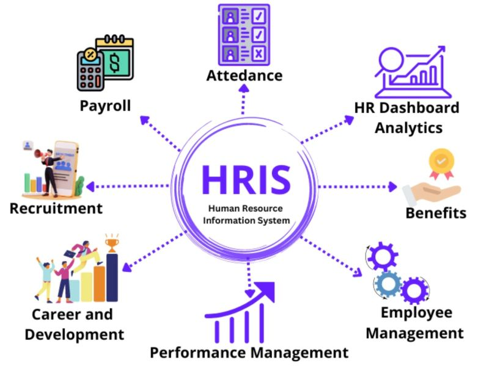

Inventory Management System - Software Engineering Project
Streamlined asset tracking, automated stock alerts, and real-time reporting tailored for my college professor's aquaculture operations.
I build robust web systems using PHP, MySQL, Bootstrap, and AWS infrastructure—transforming complex operational needs into scalable digital tools.
Streamlined asset tracking, automated stock alerts, and real-time reporting tailored for my college professor's aquaculture operations.

Enterprise HRIS featuring facial recognition attendance verification using face-api.js, live GPS field tracking, and cloud deployment for Green Meadows Security Agency.
"What is earned reshapes what is required."